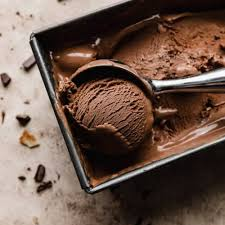

Chocolate ice cream

Best ever ice cream
Forget the faff of ice cream makers and custard – this fudgy chocolate ice cream not only tastes divine, it's easy to make at home too
Ingredients
- 200g dark chocolate (at least 70% cocoa solids), chopped into small pieces
- 500ml double cream
- 340g can sweetened condensed milk
- 1 tsp vanilla extract
- 3 tbsp organic cocoa powder, sifted
- 50g milk chocolate chips
- sea salt flakes, to serve (optional)
Steps
- Melt the chocolate in a heatproof bowl set over a pan of just-simmering water, ensuring the bowl doesn’t touch the water, or do this in the microwave in 20-second bursts until smooth and glossy. Leave to cool slightly.
- Pour the cream, condensed milk and vanilla into a second bowl and beat for 3 mins using an electric whisk until slightly thickened and the beaters leave a trail in the mixture when lifted across the bowl.
- Gently fold the melted chocolate and cocoa powder into the cream mixture until thoroughly combined, ensuring the spatula is reaching the bottom of the bowl so all the chocolate gets mixed in. Fold in most of the chocolate chips, reserving a small handful.
- Scrape the mixture into a 1-litre freezerproof container, then scatter over the reserved chocolate chips. Cover and freeze for at least 6 hrs until firm but scoopable. Will keep frozen for up to a month.
- To serve, scoop the ice cream into chilled bowls or ice cream cones and sprinkle with a pinch of sea salt, if you like.
Back